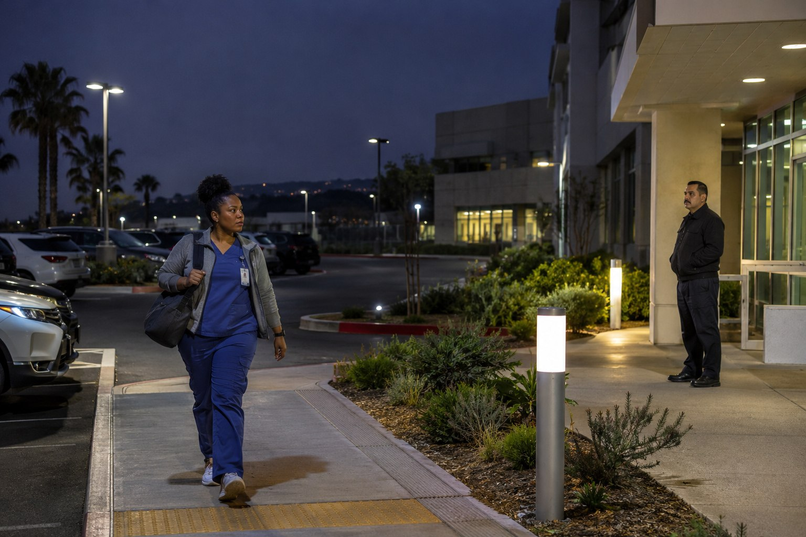

At Shift Change, Your Medical Staff Walk to Their Cars at the Darkest Hour of the Day

The shift ends, but the workday is not really over yet. A nurse walks out of the medical center with her bag over one shoulder, tired in the way only a long shift can make a person tired. The lot is large and mostly quiet. Somewhere behind her, a visitor is still arriving, because a hospital never follows the hours of an ordinary workplace. She is thinking about the walk, the distance between the door and her car, and who else might be out there in the dark.
That walk happens at 7 pm, at 11 pm, and again at 3 am, in surface lots that stretch far from the entrance, and in parking structures where sight lines disappear around concrete pillars. It happens for nurses, technicians, aides, therapists, cleaning staff, and everyone else whose shift ends when the building is at its quietest. For the staff member making it alone, it is one of the most exposed moments of the entire day.
A Hospital Lot Never Truly Empties
Most workplaces have a rhythm. People arrive together, leave together, and the parking lot empties until morning. A hospital or medical center does not work that way. Patients arrive at midnight. A family member comes back after a late call from a doctor. A delivery driver circles looking for the right entrance. Someone who has just received hard news sits in a car, trying to gather themselves before driving home.
That constant movement sounds like safety, but it creates a different problem. In a lot that never truly empties, almost anyone can look like they belong there. A person sitting in a parked car could be a worried spouse. A person walking between rows could be a visitor who lost track of where they parked. A person standing near a stairwell could be waiting for a ride. Staff members making that late walk have no easy way to tell the difference between ordinary hospital traffic and someone who is watching, waiting, or looking for an opportunity.
The size of healthcare parking adds to it. Large campuses need large lots and tall structures, and those spaces were built to hold cars, not to make a tired employee feel seen on the way to one. Rows stretch away from the lighted entrance. Corners sit in shadow. Stairwells and elevator lobbies hold people out of view until someone is already close. The farther the car, the longer the walk, and the longer a staff member spends alone between the safety of the building and the safety of a locked vehicle.
Parking Areas Sit Near the Top of the Risk List
This is not just an uneasy feeling that staff are asked to push through. A 1995 hospital parking security report indexed by PubMed describes substantial shares of reported hospital crime occurring in parking lots and structures, using data from the 1993 IAHSS hospital crime survey. Those historical findings are not current incident rates. That finding matters because it puts the lot in the same serious conversation as the emergency department and other places leaders already watch closely. The risk does not stop at the exit door. For staff, the shift includes every step after it.
The kinds of trouble that gather in these spaces are familiar, and they build on each other. There are confrontations with people who are angry, confused, or under strain after hours in a medical setting. There are strangers wandering rows with no reason to be near employee vehicles. There are break ins, because a car that sits through a twelve hour shift gives someone plenty of time to notice it, test it, and come back to it. Healthcare lots draw vehicle theft for exactly that reason. The cars are predictable. The owners are inside, busy, and unable to notice anything happening outside.
Even when no crime touches a particular staff member, the atmosphere does its own damage. A nurse who has been followed to a car once, or who has found a door handle pulled and a window marked, carries that memory into every later shift. A technician who hears about a coworker being confronted in a structure stops parking there, then walks even farther from a remote lot instead. Stories move through a unit quickly, and they do not need to happen often to change how safe an entire team feels coming to work.
The Darkest Hours Line Up With the Hardest Shifts
The timing makes everything heavier. The 7 pm change can fall in full darkness for much of the year. The 11 pm change happens when surrounding streets are empty and the campus has settled into its nighttime quiet. The 3 am change is harder still. The staff leaving then have worked through the deepest part of the night. Their attention is worn down. The people arriving to relieve them are walking in through the same dark spaces, half awake, with the same long distance to cover.
Practical safeguards for medical facility shift changes
Facility leaders can begin by walking employee routes at the same hours staff use them. Assess lighting, visibility, access points, reporting procedures and the distance between staff entrances and designated parking areas. Ask employees which locations consistently feel unsafe and document the concerns.
A site specific security plan may include monitored access, patrol coverage, incident escalation procedures and coordination with hospital leadership. The plan should be designed around actual staffing, site conditions and the roles assigned to licensed security personnel.
Improving the route from the building to the car requires more than installing another sign. It requires a clear responsibility for observing hazards, responding to reports and reviewing conditions during each shift.
Fatigue is part of the risk, and it is easy to overlook. A person at the end of a demanding shift is thinking about traffic, family, food, and sleep. She is digging for keys, answering a message, carrying a bag, a jacket, and whatever she brought for a meal she barely had time to eat. She is not scanning every row. She should not have to. Yet the lot asks exactly that of her, night after night, at the moment she has the least left to give.
Fear in the Lot Follows People Into the Job
Healthcare leaders already know how hard it is to keep good people. What happens in the parking lot belongs in that conversation too. Staff safety worries affect whether people stay in a job, and the walk to the car is one of the most repeated safety experiences an employee has. It happens at the start of the shift and at the end of it. It frames the whole day. A workplace can feel supportive inside the unit and still lose someone who dreads what waits outside the door.
The effect spreads in quieter ways before anyone resigns. Staff trade shifts to avoid certain hours. Experienced nurses decline overtime they would otherwise take because they do not want the later walk. New hires hear the warnings during their first week, which parking areas to avoid, which stairwell feels wrong, which rows sit too far from the entrance. Those warnings become part of the culture of the place, passed along like other survival knowledge, and they tell new staff something unflattering about how protected they really are.
The Walk Nobody Schedules Still Happens Every Night
No administrator puts that walk on a schedule, and no incident report captures the hundreds of uneasy trips that end without anything happening. But the pattern is plain. Large lots and structures, cars left for long shifts, strangers moving through at all hours, tired staff walking alone at the darkest times of day, and historical evidence of crime occurring in hospital parking facilities. Each part is understandable on its own. Together, they describe a risk that renews itself at every shift change.
That is the gap facilities across the greater Los Angeles area and San Bernardino County live with, and it is the kind of setting Paradigm Security Services was built for. The nurse crossing that quiet lot at 3 am is not asking for much. She is asking to get to her car, get home, and come back tomorrow willing to do the work again. When the walk itself becomes the reason she dreads the job, the problem has already grown far beyond the parking lot.
Discuss your project
Paradigm Security Services provides security guard services for medical and healthcare facilities. Request a Quote to discuss staffing and coverage needs.